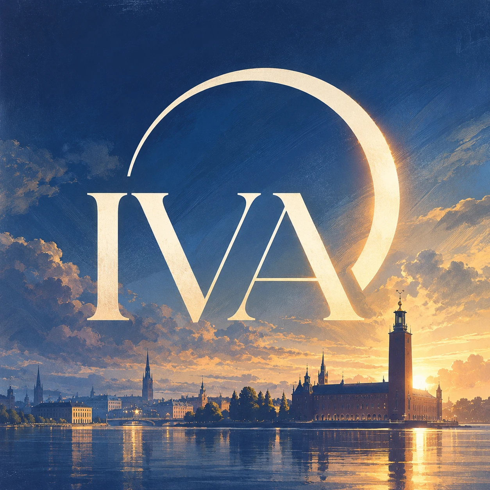

AX. 00 — HORISONT · N 59°19′
PLAN 00 — RIDDARFJÄRDEN
R = 322
CL
SOL 07:36
IVA / HS 2026 / BLAD 107
STOCKHOLM — STADSHUSET
Kungl. Ingenjörsvetenskapsakademien
Stockholms stadshus
23 oktober 2026
107:e
Högtids-
sammankomsten
klicka för helskärm · mellanslag pausar